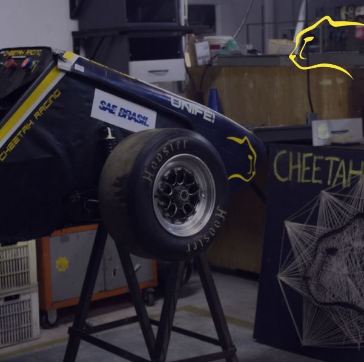

Cheetah Racing
Descrição
A equipe Cheetah Racing de competição pertecente à Universidade Federal de Ijajubá, e disputado a Fórmula SAE Brasil, onde seu objetivo principal é construir um carro de competição que seja à combustão
Iniciei minha caminhada na equipe em maio de 2022, tendo entrado na subequipe de eletrônica. Realizei parte do processo de montagem do chicote elétrico, crimpagem de fios e testes dos sensores presentes no carro. Após a competição da Fórmula SAE, me tornei projetista de aquisição de dados, tendo sido responsável pela parte de sensoriamento (escolhas e testes), número de polos para o chicote entre outros. Encerrei minha participação em 2023, no mês de janeiro.
← Voltar ao portfólio